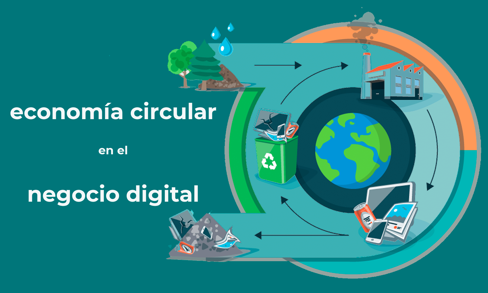

La digitalización no solo impulsa la productividad de las empresas; también se ha convertido en una pieza clave para reducir su impacto ambiental. Cuando se aplica con criterios responsables, la tecnología permite optimizar recursos, disminuir el consumo energético y generar menos residuos.
A continuación, se explica cómo diferentes tecnologías digitales contribuyen a la transición hacia un modelo más sostenible y alineado con la Economía Circular.

1. Cloud Computing (Computación en la Nube)
La nube evita que las empresas dependan de grandes infraestructuras físicas, reduciendo costes y consumo energético.
Beneficios sostenibles:
- Disminución del número de servidores locales y del gasto eléctrico.
- Los centros de datos de grandes proveedores suelen ser mucho más eficientes que los equipos individuales.
- Permite pagar solo por los recursos utilizados, evitando infraestructuras sobredimensionadas.
- Reduce la generación de residuos electrónicos al requerir menos hardware propio.
2. Virtualización
La virtualización permite ejecutar múltiples máquinas virtuales dentro de un único equipo físico, maximizando su rendimiento.
Ventajas sostenibles:
- Menor necesidad de adquirir nuevos equipos y servidores.
- Reducción del consumo energético y de la temperatura en salas técnicas.
- Mayor vida útil de los equipos existentes, que pueden reutilizarse para tareas concretas.
3. Internet de las Cosas (IoT)
El IoT conecta dispositivos para recopilar datos y automatizar procesos de forma eficiente.
Aplicaciones sostenibles:
- Sensores que apagan luces o equipos cuando no están en uso.
- Control inteligente del consumo energético en tiempo real.
- Monitorización del estado de máquinas para evitar averías y reducir reparaciones costosas.
4. Inteligencia Artificial (IA)
La IA permite analizar grandes volúmenes de datos y optimizar decisiones que afectan a la sostenibilidad.
Usos sostenibles destacados:
- Optimización de rutas logísticas, reduciendo consumo de combustible.
- Implementación de mantenimiento predictivo para evitar fallos y prolongar la vida útil de equipos.
- Ajuste automático de calefacción, climatización e iluminación en edificios inteligentes.
5. Blockchain
Aunque su impacto depende del uso, la tecnología blockchain también ofrece herramientas útiles para la sostenibilidad y la trazabilidad.
Ejemplos asociados a la economía circular:
- Registro transparente del ciclo de vida de los residuos electrónicos (RAEE).
- Certificación fiable de materiales reciclados.
- Control trazado y seguro de la cadena de suministro.
6. Software en la nube y servicios digitales
Las soluciones digitales reducen la necesidad de equipos potentes y de instalaciones locales complejas.
Beneficios sostenibles:
- Menor consumo energético en los puestos de trabajo.
- Reducción del número de actualizaciones físicas y del hardware obsoleto.
- Fomento del teletrabajo, disminuyendo desplazamientos y emisiones asociadas.
7. Digitalización como apoyo a la Economía Circular
La transformación digital facilita directamente la aplicación de los principios de la economía circular:
- Permite monitorizar equipos y alargar su vida útil.
- Disminuye la cantidad de residuos generados.
- Optimiza procesos, evitando consumos innecesarios.
- Automatiza tareas que antes requerían recursos físicos.
- Facilita la reparación mediante guías, manuales y sistemas de diagnóstico digitales.
Conclusión
La digitalización, bien aplicada, se convierte en una aliada esencial para construir empresas más eficientes, sostenibles y respetuosas con el entorno. Tecnologías como la nube, la virtualización, el IoT o la inteligencia artificial no solo mejoran la productividad, sino que también ayudan a reducir residuos, ahorrar energía y fomentar la economía circular dentro del sector TIC.